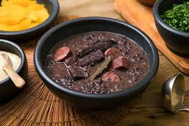
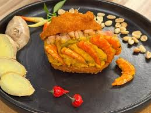
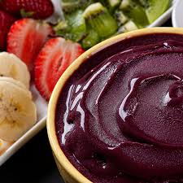

Pratos Típicos
Conheça os sabores mais emblemáticos da culinária brasileira

Feijoada
Considerada o prato nacional do Brasil, a feijoada é um cozido de feijão preto com diversas carnes de porco. Servida com arroz, farofa, couve refogada e laranja, é uma verdadeira celebração gastronômica que reúne famílias aos sábados.
Origem: Nacional
Acarajé
Bolinho de feijão-fradinho frito no azeite de dendê, recheado com vatapá, caruru e camarão seco. Patrimônio cultural imaterial do Brasil, é uma herança da culinária africana presente nas ruas de Salvador.
Origem: Bahia
Açaí
Fruto amazônico que conquistou o Brasil e o mundo. No Pará é consumido com peixe e farinha, enquanto no restante do país é servido como sobremesa gelada com granola, banana e mel. Rico em antioxidantes e energia.
Origem: Pará / Amazônia
Pão de Queijo
Iguaria mineira feita com polvilho e queijo, o pão de queijo é um dos lanches mais amados do Brasil. Crocante por fora, macio por dentro, é perfeito acompanhado de um cafézinho fresco.
Origem: Minas GeraisVídeos de Gastronomia
Assista e aprenda sobre os sabores do Brasil
Em Busca da Melhor Comida do Brasil
Um tour gastronômico pelos pratos mais famosos do país.
Comidas Típicas do Brasil
Descubra os sabores mais autênticos da culinária brasileira.